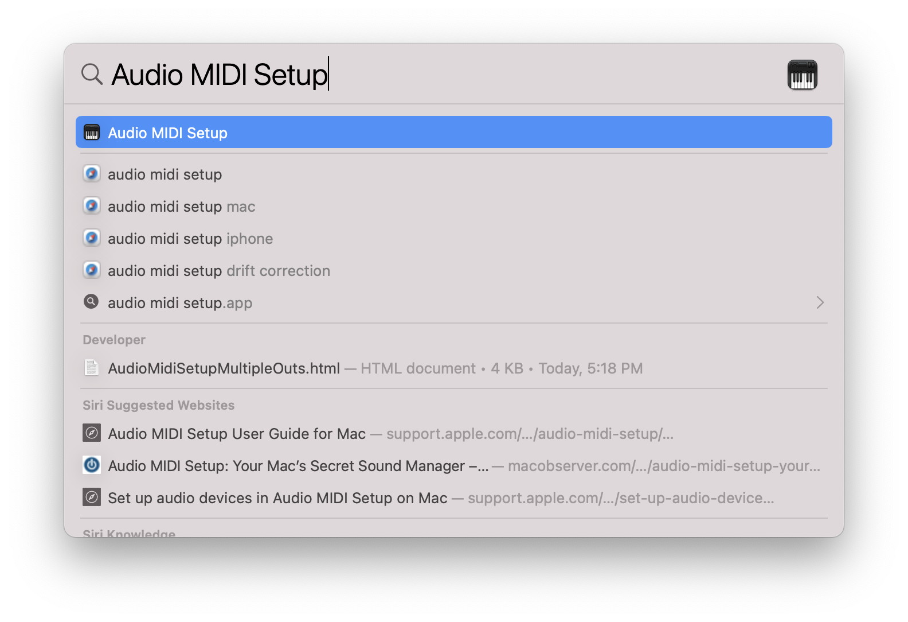
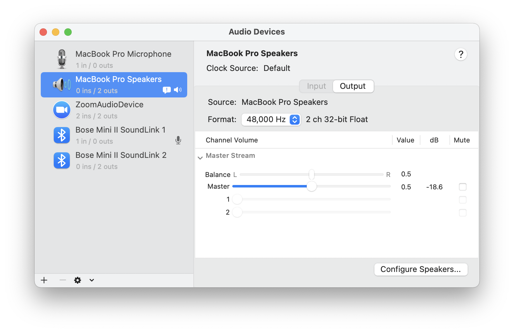
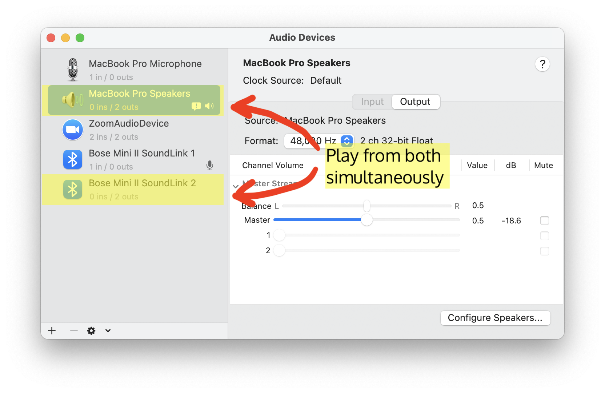
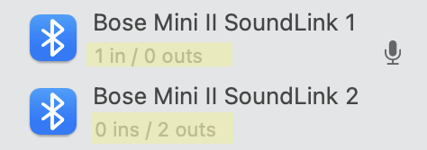
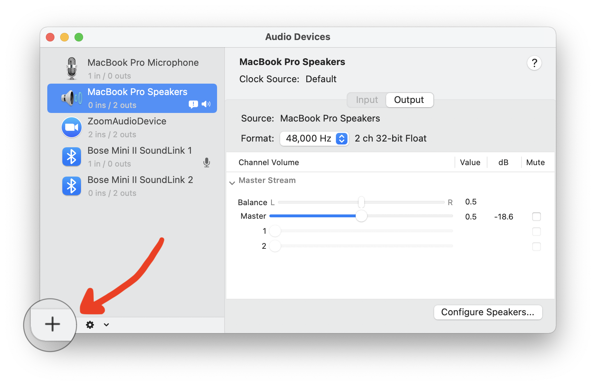
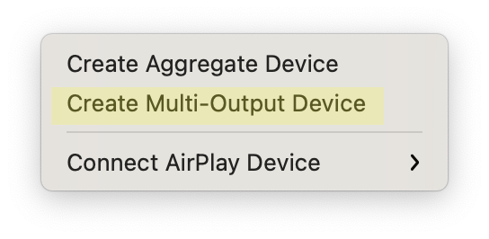
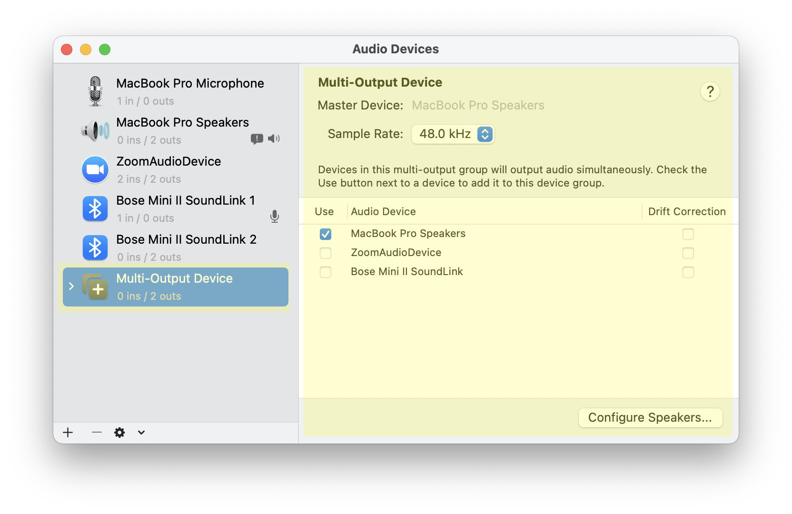
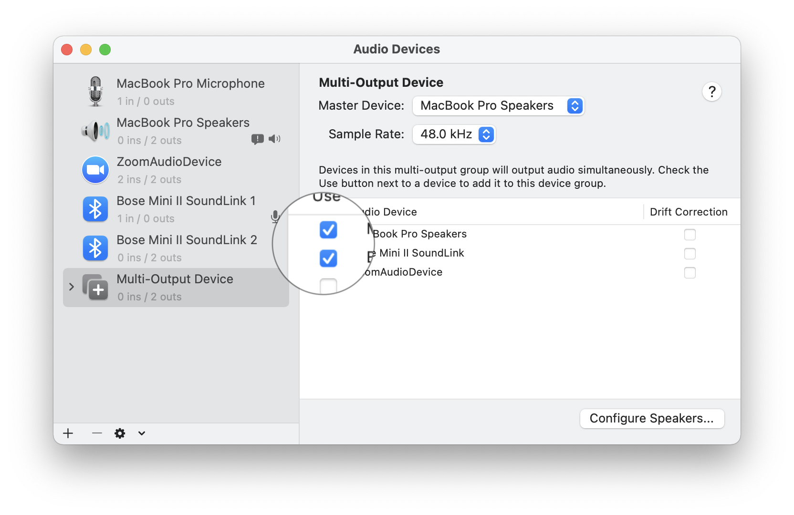
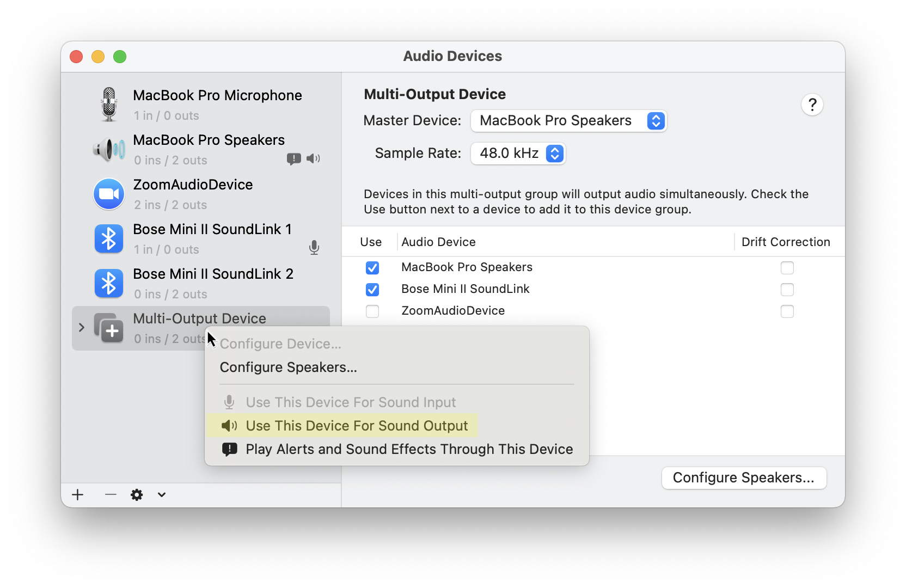
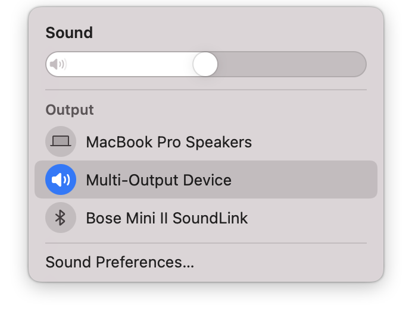

Friday, Christmas Day, 2020
Friday, Christmas Day, 2020
Playing out of multiple audio outputs/speakers can be very useful in many applications. For one, it can provide a lot more sound than a single speaker. It can also be used to coordinate between headphones and a speaker.
1. Open Audio MIDI Setup (Spotlight search "Audio MIDI Setup" and then press the Enter key).

Once opened, it should look something like this:
Suppose I want to combine my MacBook speakers with my other speaker. Choose the ones that say speaker
The reason it is "Bose Mini II Soundlink 2" not "...Soundlink 1" is because "Soundlink 1" is the microphone in the speaker. To identify, see the gray-ish text below the name of the sources. If it says XX in / 0 outs, then its a microphone. If it says 0 in / XX outs, then its a speaker. If it has an "in", it means it has an input, in this case a microphone. "Out" means it has an output, in this case a speaker.
To combine, press the "+" button in the bottom left-hand corner.
Then, click "Create Multi-Output Device"
A Multi-Output device has been created. It should look like this (without the highlights, of course):
Now, select the outputs you want to join. In this case, it is the "Bose Mini II Soundlink" and "MacBook Pro Speakers"
If the speakers are not synchronized, enabling "Drift Correction" re-samples the data in both outputs and corrects their sound output. Now, choose as the "Sound Output" It is optional to click "Play Alerts and Sound Effects Through This Device" as well.
With that, you can play audio through multiple outputs simultaneously!
